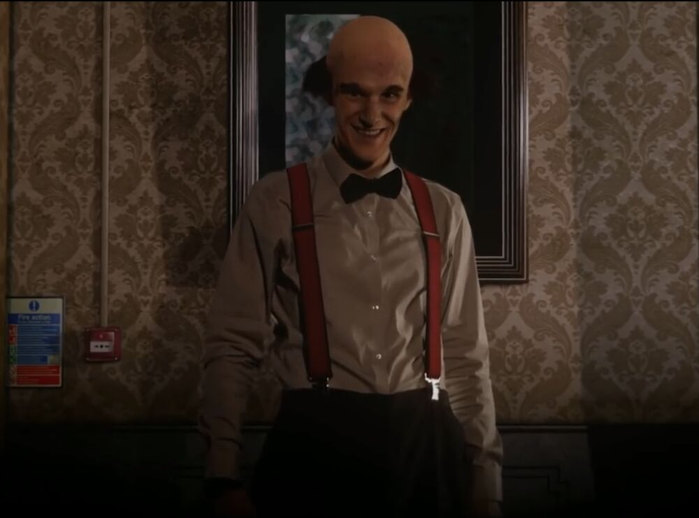
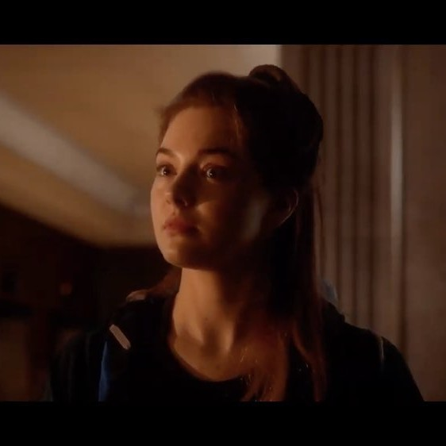
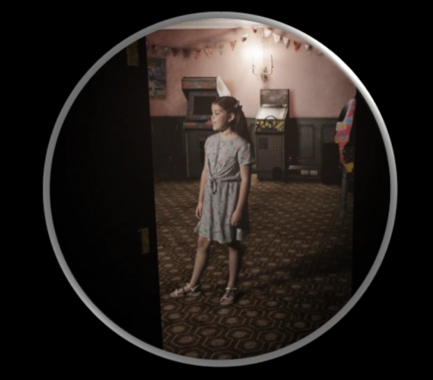
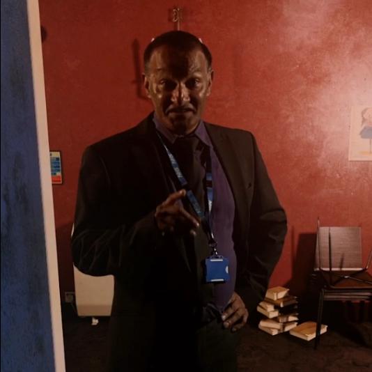
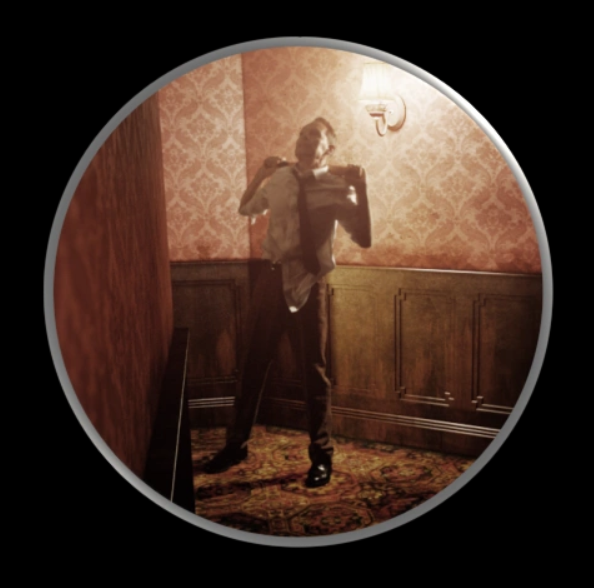
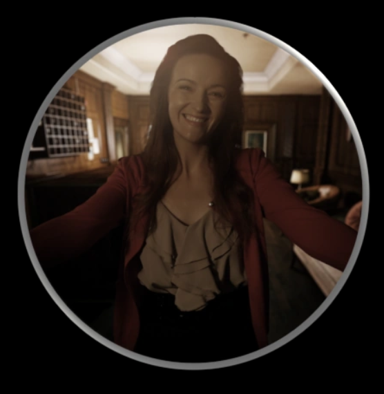

Fan Site
At Dead Of Night is a unique blend of horror film and game elements, offering an immersive experience that combines live-action and graphics. The game follows Maya, a student trapped in a remote hotel run by a psychopath named Jimmy Hall. As Maya attempts to rescue her friends, she must confront and communicate with the ghosts of Jimmy's past to uncover his dark secrets. The game is available on Steam and is part of a series that includes a sequel titled 'At Dead Of Night: The Great Hugo', set to be released in 2026.

In "At Dead of Night," the character of Jimmy Hall, also known as Hugo Punch, is the main antagonist who kidnaps and holds Maya and her friends hostage within the Sea View Hotel. Jimmy is a psychotic man who has previously kidnapped, assaulted, and murdered guests at the hotel. His alter-ego, Hugo Punch, is a violent entity that controls him and chases Maya with the intent to hurt her. The game reveals that Jimmy is cognisant of his possession and even suicidal as a result of it. The player must navigate the hotel and communicate with the ghosts of Jimmy's victims to uncover his terrifying secret and escape the hotel.

In "At Dead of Night," Maya is the central character who must navigate the eerie Sea View Hotel while communicating with the ghosts of Jimmy Hall's victims. Her ability to scry and piece together the stories of these ghosts is crucial for her survival and understanding the hotel's dark history. Maya's character is deeply affected by her encounter with Jimmy Hall, who is revealed to be a psychopath with a history of abuse. Throughout the game, Maya's interactions with the hotel's spirits and her own experiences lead to a chilling narrative that explores themes of trauma, survival, and the human psyche.

Amy Bell is a central character in the game "At Dead of Night," where she is depicted as a young girl trapped in a hotel by the malevolent host, Jimmy. Her story unfolds as players navigate through the haunted hotel, uncovering the tragic events that led to her demise. Amy's interactions with Jimmy reveal the extent of his cruelty and the lengths he goes to in his twisted games. The game's narrative is rich with details about Amy's past, her struggles, and the consequences of her actions. Players must piece together the clues to understand Amy's story and the impact it has on the hotel's inhabitants.

Dr. Bose is a psychiatrist and one of the key ghost characters in At Dead of Night, whose tragic story intertwines with Jimmy Hall’s violent behavior at the Sea View Hotel. He serves as the second ghost Maya encounters at the Sea View Hotel. Despite being a trained psychiatrist, he struggles to understand Jimmy Hall’s erratic and violent behavior, which is influenced by the personality of his abusive father, Hugo Punch.

Harvey is a pivotal character in "At Dead of Night," a horror game where he plays the role of a ghost and former hotel proprietor, entangled in a tragic narrative involving his troubled relationship with his stepson, Jimmy.

Rose, born Rosemary Dolores Jones, is the mother of Jimmy and the owner of the Sea View Hotel. Her character is defined by her deep love for her son and her attempts to shield him from the consequences of his actions and the abuse he suffered.
At Dead Of Night Game Tips and Strategies:
These strategies can help you navigate the game more effectively and increase your chances of a successful run. Always remember to save your game and be cautious of Jimmy's movements to avoid being caught.